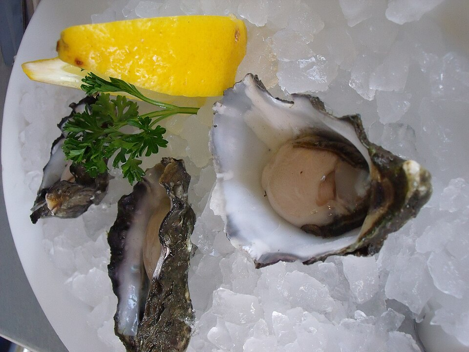

Daily Shucked Raw Bar
Boutique Carolina, Virginia, and Gulf oysters flown in fresh daily, hand-shucked to order over crushed ice with mignonette and fiery cocktail sauce.
Explore Oyster Program →Welcome to The Waterman Fish Bar, South End’s favorite neighborhood seafood sanctuary. From boutique Carolina oysters shucked over crystal ice at our bustling raw bar to golden Maine lobster rolls, crispy beer-battered fish and chips, and tropical craft libations atop our second-story open-air rooftop, we bring authentic coastal tavern spirit to South Boulevard.

Cold-water provenance, scratch kitchen execution, and skyline rooftop views.
Boutique Carolina, Virginia, and Gulf oysters flown in fresh daily, hand-shucked to order over crushed ice with mignonette and fiery cocktail sauce.
Explore Oyster Program →Our second-floor open-air deck overlooks South Boulevard, offering sunset views, frozen painkillers, botanical spritzes, and Carolina craft drafts.
Discover Topside →Maine lobster rolls packed with tender claw meat, crispy beer-battered whitefish & chips, spicy Voodoo shrimp, and bubbling chargrilled oysters.
View Coastal Entrees →Open daily for lunch, happy hour, and late rooftop evenings. Free parking lot, lively community dining, and Charlotte's premier $1.50 oyster happy hour.
Hours, Happy Hour & Directions →